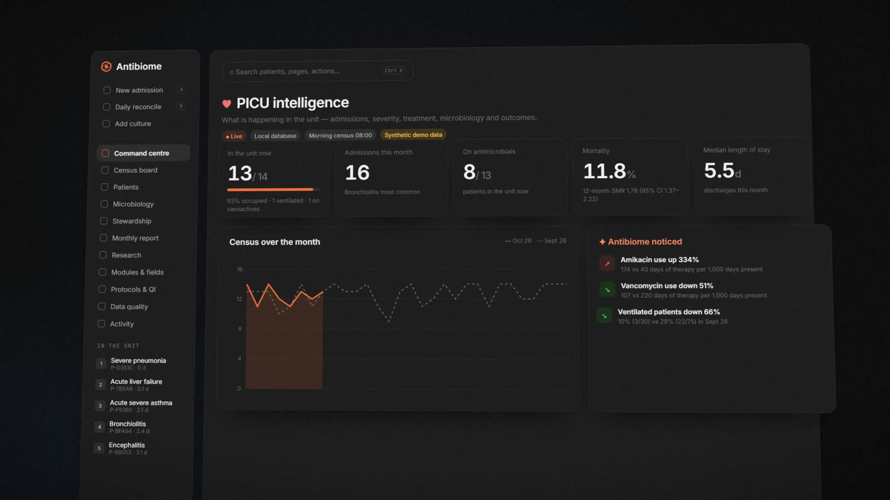
The unit at a glanceCensus, severity and what changed this month
Record a child's stay at the bedside in seconds. Antibiome connects every admission, culture, antibiotic and vital sign into patterns your unit can act on — on your own PC, nothing sent to the cloud.
Census, cultures, scores and changes — everything Antibiome records, linked to the bedside.

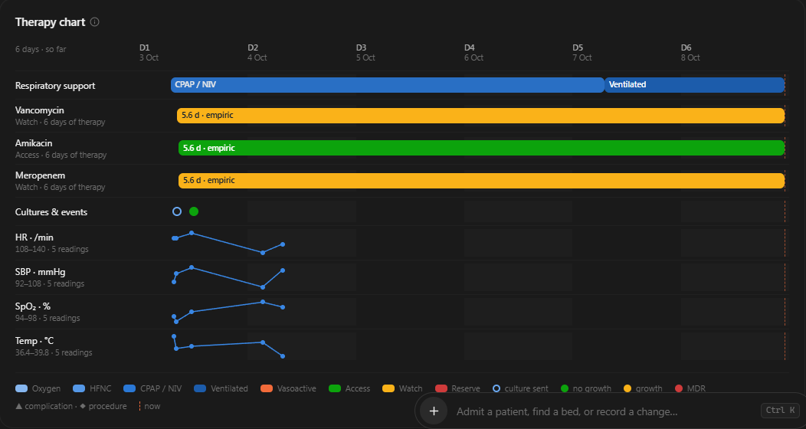
Support, vasoactives and every antibiotic across the days, cultures where they happened, vitals underneath.
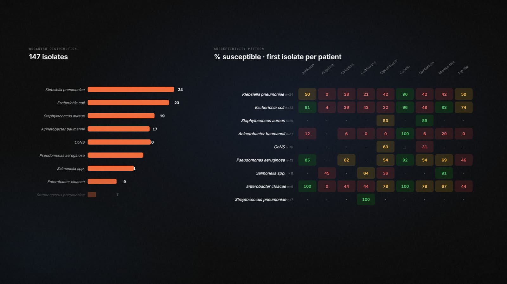
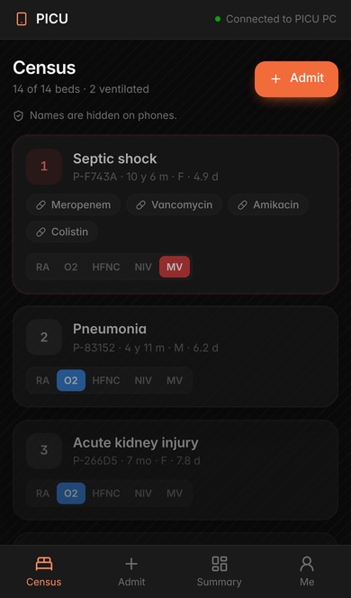
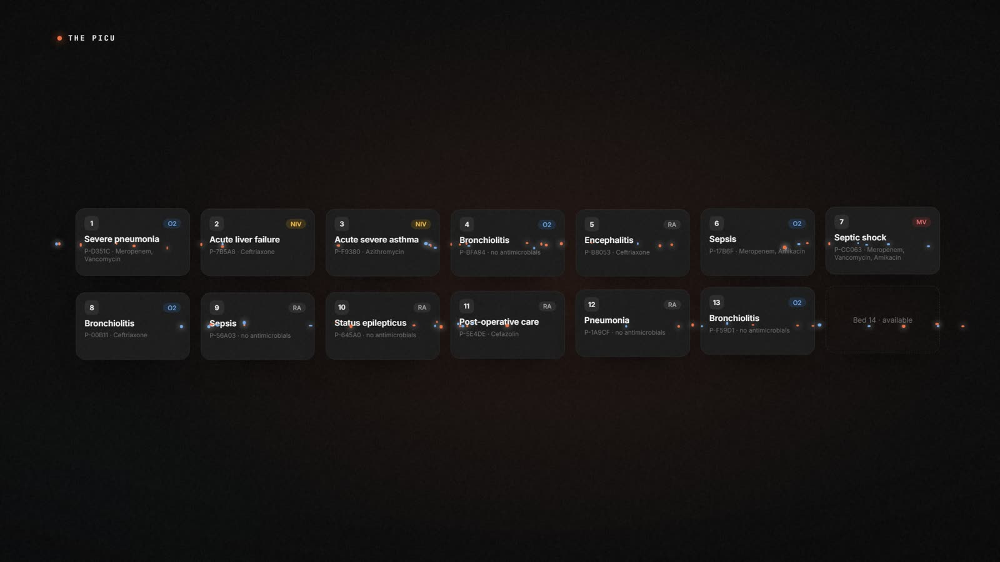
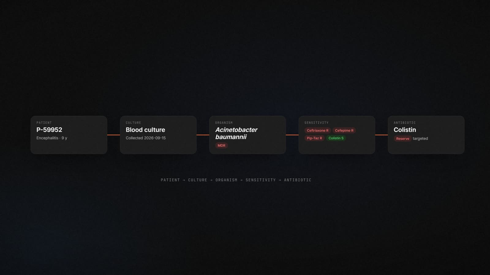
Antibiome reads the unit the way a senior colleague would: it remembers every admission, every culture and every antibiotic course, and quietly flags what changed — with the test behind it and a reminder that a change is not a cause.
“Antibiome noticed”, from the synthetic demo data.
A colleague that never forgets — it keeps the unit's memory and tells you what changed, month by month.
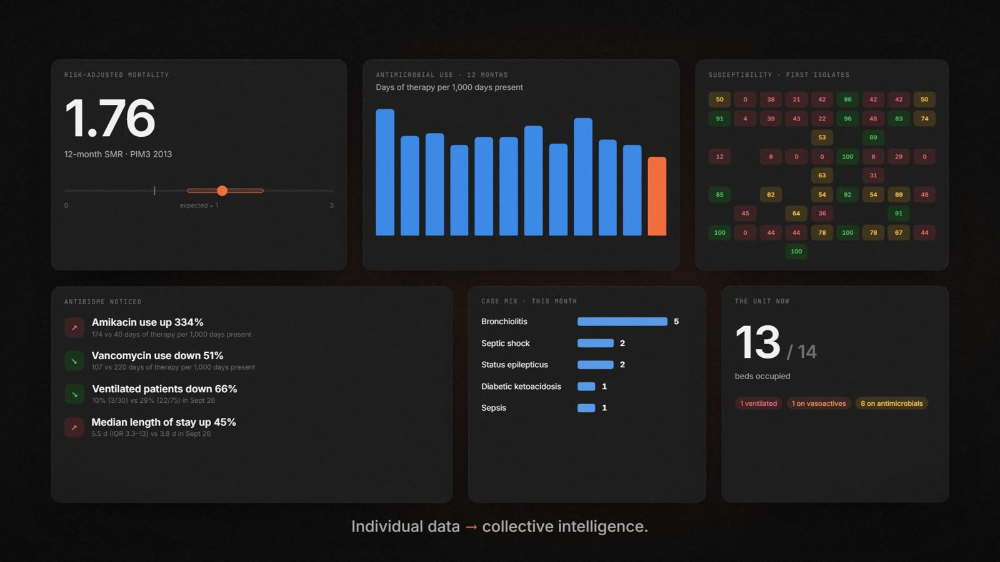
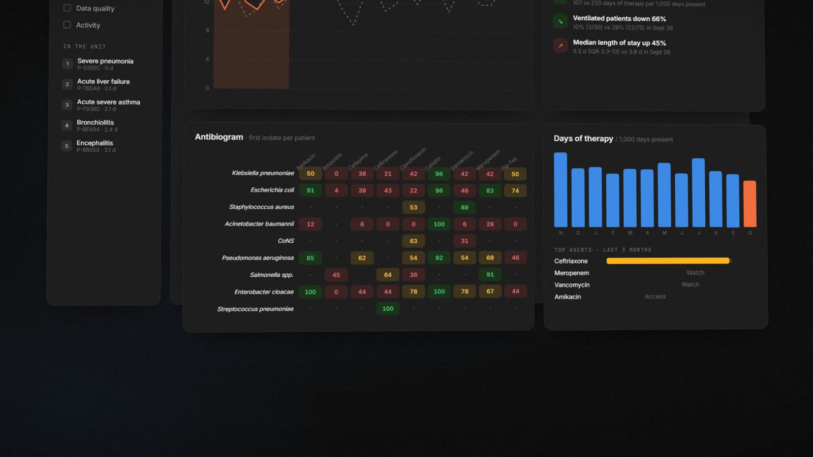
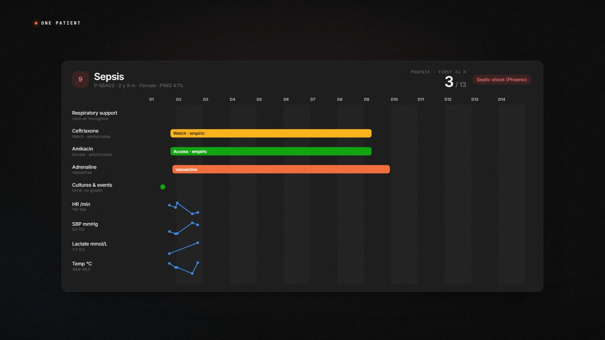
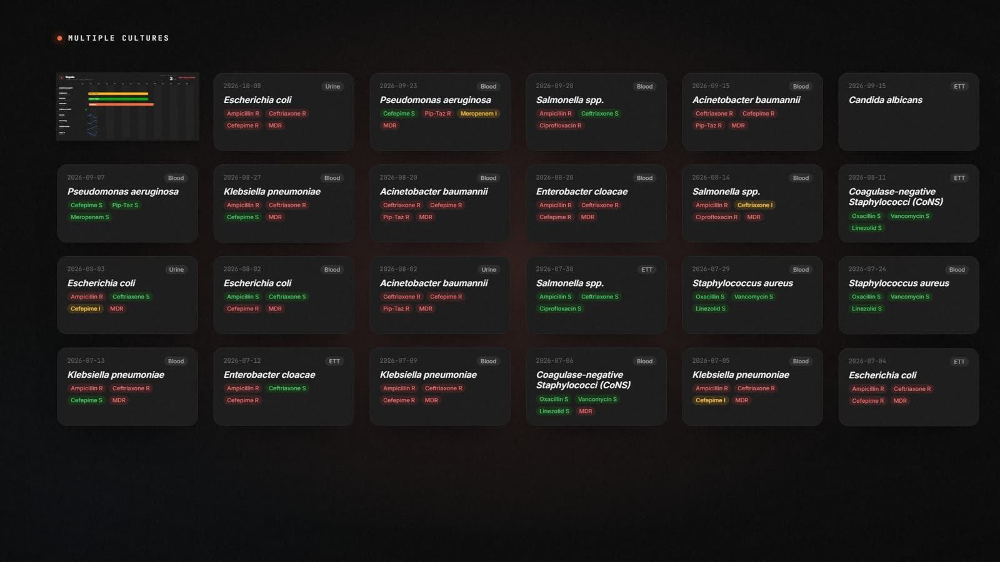
«Every result is labelled — association, never cause — and every number traces back to the records behind it.»
Comparisons carry their test and p value, and say plainly what they cannot show. Logistic regression is refused when there are too few events.
Fisher · Mann–Whitney · EPV ≥ 10The antibiogram counts the first isolate per patient and marks every cell under 30 isolates. Months with few patients say so.
CLSI M39 · days presentA value nobody recorded is never treated as “no”. Scores list the inputs they are missing, so an underestimate is visible.
Phoenix · PIM3 · modulesWorks where your unit works
One Windows PC holds the record. Phones on the ward Wi-Fi bring it to the bed. Older PCs get their own edition.
Windows 10 & 11 · Windows 7, 8 & 8.1 · 32- and 64-bit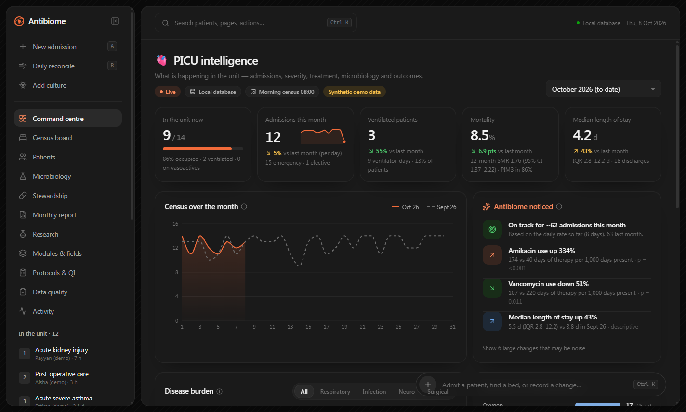
The PICU PCThe database, analytics and reports, on one computer.
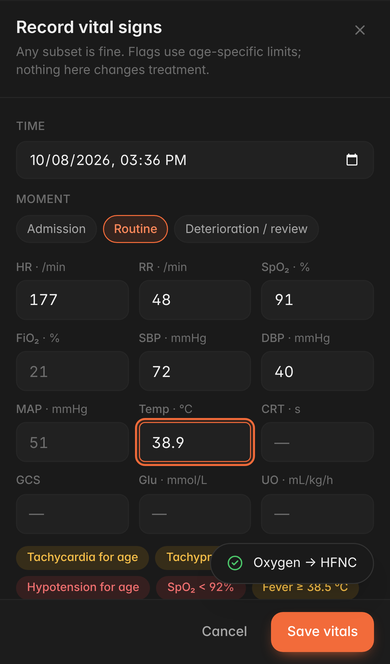
Phones on the Wi-FiPaired by QR code, locked after 5 minutes, nothing stored.
Older PCs tooA separate edition for Windows 7, 8 and 8.1 machines.
No. Everything runs on the PICU PC with a local database. Internet is only used if you switch on AI questions.
In one SQLite file on the unit PC (%APPDATA%\Antibiome PICU\data), with a snapshot every day. Names and MRNs are kept apart from the analytics and never leave the PC.
Yes. Windows 10 and 11 use the regular edition. Windows 7, 8 and 8.1 have their own edition, in 32- and 64-bit. It is the same app on an older engine that no longer receives security updates, so move to Windows 10 or later when you can.
Yes, over the hospital Wi-Fi. An administrator pairs each phone with a single-use QR code; staff sign in with their own accounts; phones lock after 5 minutes and store nothing about patients.
No. Antibiome describes what the unit records and does — severity, use, susceptibility, adherence — for audit, quality improvement and research. Treatment decisions stay with the clinical team.
PIM3 estimates risk of death for unit-level comparison (SMR). Phoenix (2024) is the international paediatric sepsis definition. Brighton PEWS describes deterioration. All are shown with their inputs and limits.
Yes. Export them from the old NICU app (Records → Export CSV) and use Settings → Import Antibiome cultures.
It's optional and off by default. An administrator can choose Claude (Anthropic) or DeepSeek to turn typed questions into queries you confirm. Only the question and field names are sent — never patient data.
The source is on GitHub and the Windows builds are free to download. Ask your hospital's IT and information-governance teams before installing it on a clinical network.
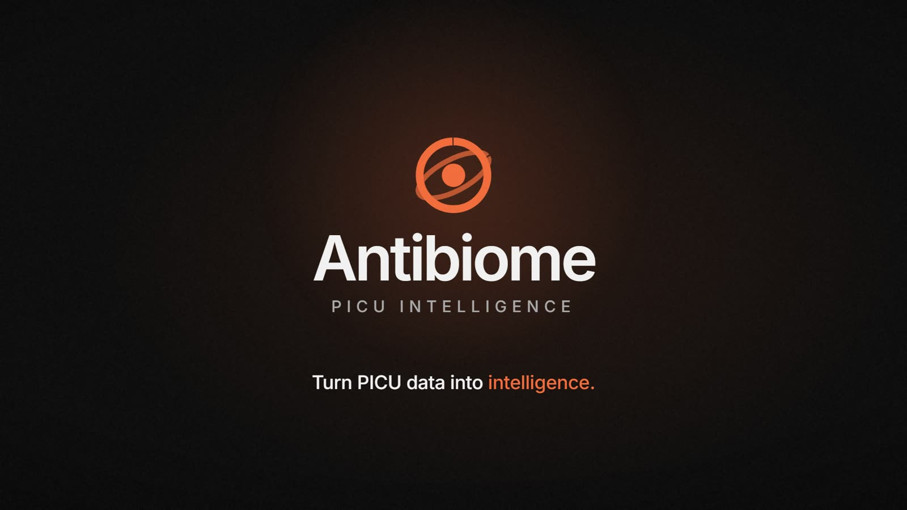
Install on one Windows PC, create the unit and admit the first patient.
From the first minute of an admission to the unit's monthly report — what the app records, what it works out, and what it never does.
Fast enough to use during a shift, so the data is complete without a second round of entry.
Everything about a child's stay in one place, and every past stay one click away.
Recognised scores, worked out from what was recorded, with their inputs and gaps shown.
The original Antibiome, now linked to admissions.
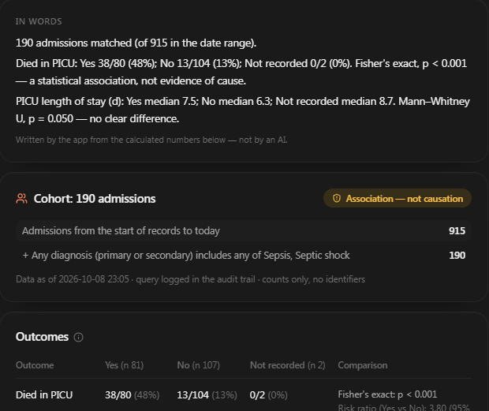
Ask the unit's data a question and get an answer that states its limits.
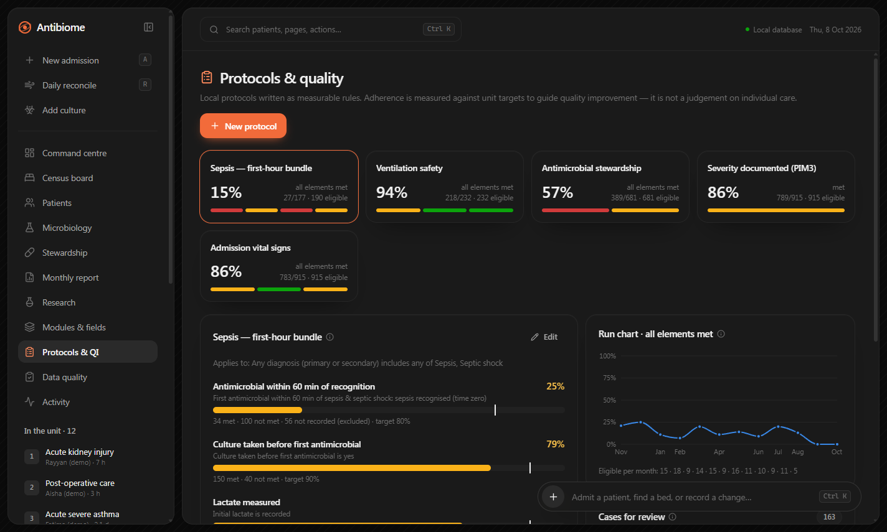
Local protocols as measurable rules, and a unit that notices change.
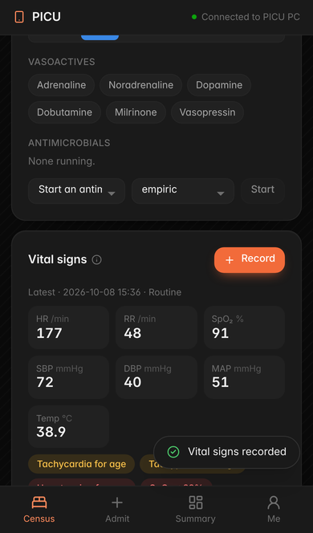
Built for a hospital's rules.
Pick the edition for your PC's Windows version. Each comes as an installer (picks 32- or 64-bit for you) or a portable file you can run from anywhere.
Windows 10/11: Settings → System → About → System type. Windows 7: Start → right-click Computer → Properties. If unsure, use the installer — it picks for you.
The files are not code-signed yet, so SmartScreen warns on first run. Choose More info → Run anyway. Hospital IT can sign them with the hospital's certificate.
Windows 7 or later, 32- or 64-bit, and a few hundred megabytes for the app, plus the database and its daily snapshots. One PC per unit holds the data; phones need the hospital Wi-Fi.
All versions and release notes: github.com/itskaero/antibiome/releases · Build it yourself: npm run dist:win or npm run dist:win7 in desktop/.
From an empty Windows PC to the first admission, then phones and optional AI. Allow about an hour, plus IT time for the network steps.
On any Windows machine with Node.js 22:
git clone https://github.com/itskaero/antibiome.git cd antibiome/desktop npm install npm run dist:win # Windows 10/11, 32- and 64-bit npm run dist:win7 # Windows 7/8/8.1 edition
The files appear in desktop\release\. Pushing a tag such as v0.1.4 builds every edition on GitHub Actions and publishes a release.
Add users in Settings → People & roles. Give each person a temporary password and ask them to change it.
| Role | Can |
|---|---|
| Administrator | Everything, including users, settings, phones, backups, import and export |
| Clinician | Record and edit clinical data; sees names and MRNs on the PC |
| Viewer | Dashboards and census with pseudonymous IDs (e.g. P-7F3A2), read-only |
| Researcher | Aggregate analytics and the de-identified export only; PC only |
The PC locks after 15 minutes without activity (Ctrl + L locks it at once).
Press A anywhere. MRN, sex, age, bed, source and primary diagnosis are all that is required; Ctrl + Enter saves. Admission vital signs and PIM3 are optional panels in the same sheet.
Press Record on the vitals card. Add Labs (lactate, PaO₂, platelets, INR, D-dimer, fibrinogen, fixed pupils) or PEWS to the same set when you have them. The app works out the Phoenix Sepsis Score for that moment and the worst in the first 24 h, and flags Phoenix sepsis and septic shock. Inputs that were not recorded count as zero, and the card says which ones are missing.
At the top of every patient page: respiratory support, vasoactives and each antimicrobial across the days of the stay, cultures and complications where they happened, and vitals underneath. Hover any mark for exact times.
Patients in the sidebar lists every admission, current and past. Search by MRN, name, diagnosis, ICD-10 code or bed, and filter by outcome or admission date. Other admissions of the same child are linked from the patient page.
Choose the outcome and time; anything still running is closed at that time, and the sheet asks only for module fields still missing.
Off until an administrator turns it on. Phones open the app in their browser from the PC over HTTPS; the PC must be on with the app running.
netsh advfirewall firewall add rule name="Antibiome PICU phones" dir=in action=allow protocol=TCP localport=8443 profile=domain,private
Settings → Phone access → On. The card shows the address (for example https://10.20.0.15:8443), the certificate's SHA-256 fingerprint, and Load hospital certificate…
Lets clinicians type a question such as “Pneumonia admissions this year: mortality by ventilation” and get a Research Explorer query to check and run. Only the question and the list of field names are sent; questions containing a recorded name or MRN are blocked; all numbers are calculated on the PC.
| Provider | Models | Key | Note |
|---|---|---|---|
| Claude (Anthropic) | claude-opus-5-5 | sk-ant-… | Structured output enforced by the service |
| DeepSeek | deepseek-flash (default), deepseek-v4-pro | sk-… | Servers in China — check your policy on international data transfer |
Administrators and researchers can export one de-identified row per admission from Monthly report → Research export: day offsets instead of dates, no names, MRNs or free text, every module and vital-sign column, and a data dictionary saved alongside. Each export is logged.
| What you see | What to do |
|---|---|
| “That port is already in use” | Choose another port in Phone access, press Apply port, and ask IT to update the firewall rule. |
| Phone: “Cannot reach the PICU PC” | Check the phone is on the staff Wi-Fi, the PC is awake with the app open, and the address matches the one in Settings. |
| Phone back on the pairing page | The phone was revoked or unpaired. Ask an administrator for a new pairing code. |
| “Session locked — sign in again” | The idle lock ran (15 min on the PC, 5 on phones). Sign in again; nothing is lost. |
| AI: “key was rejected” | Paste a new key for the selected provider in Settings → AI questions. |
| AI: “no credit left” (DeepSeek) | Top up the DeepSeek account, or switch the provider to Claude. |
| AI: “busy (rate limited)” | Wait a minute and ask again, or build the query in the Explorer by hand. |